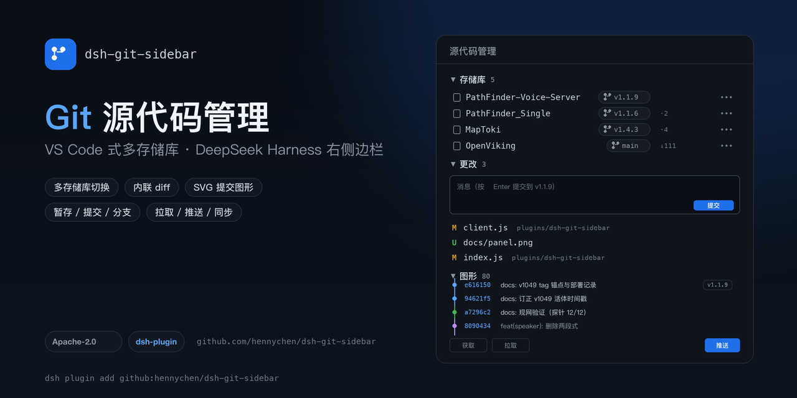
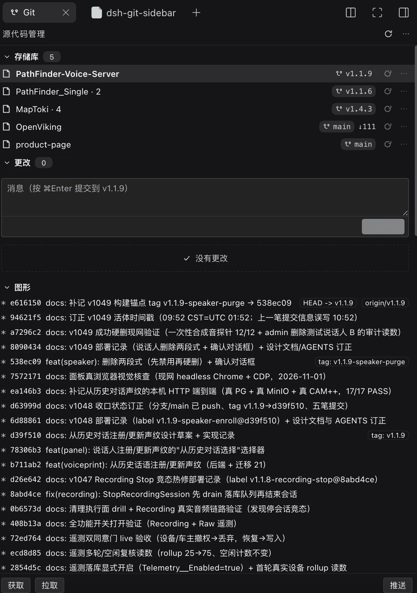

Git 源代码管理
就在 DeepSeek Harness 右侧边栏
VS Code Source Control 式的多存储库面板：自动发现会话目录、嵌套仓库与已注册工作区， 逐文件暂存/放弃、内联 diff、提交（含 Amend 与撤销）、分支、拉取/推送/同步，还有可展开提交详情的 SVG 提交图形。

功能
对齐 VS Code 的 Source Control 布局，同时适配右侧边栏的窄宽度。
会话目录、其下嵌套仓库、已注册工作区里的 Git 仓库一处列出；每行带分支、领先/落后与同步。标题栏眼睛按钮可逐仓库显示/隐藏，或只看有更改的仓库。
更改 / 暂存的更改分组，逐文件暂存、取消暂存、放弃；提交按钮带下拉（提交全部 / 提交并推送 / Amend / 撤销上次提交），并保留每仓库最近 20 条提交信息历史。
点击文件行展开统一 diff，+/- 着色、hunk 头；未跟踪文件合成新增对比，二进制与超长文件有提示。文件列表支持筛选与树/列表视图。
SVG 车道图：父提交连线、合并节点空心双环；分支多选与图例、提交筛选。点击任意提交展开详情（变更文件 +N/-N、单文件 diff），可签出、建分支或打标记。
获取 / 拉取 / 推送 / 同步、分支切换与新建/删除、储藏、标记、工作树、克隆，以及最近 60 条命令的 GIT 输出查看器。
仓库始终由会话目录推导；root 覆盖只允许会话目录或已注册工作区内的路径，越界直接拒绝。
安装
任选一种；安装后在「设置 → 插件」里确认 bundle 已启用，右侧边栏 + 会出现「源代码管理」。
① 从 GitHub 直接安装
在终端里把本仓库作为 bundle 装进 profile：
dsh plugin --profile desktop add github:hennychen/dsh-git-sidebar
也可以本地开发挂载：dsh plugin --profile desktop add link:/path/to/repo。
② 通过插件市场
- 设置 → 插件 → 实验性插件 → 更多 → 打开「自定义插件市场」
- 「发现」→「添加索引源」→ 粘贴下面的索引地址
- 在卡片里安装，确认来源为 Git 仓库与固定提交
https://hennychen.github.io/dsh-git-sidebar/market/index.json
截图
右侧边栏里的多存储库源代码管理：存储库 / 更改 / 图形三段。
